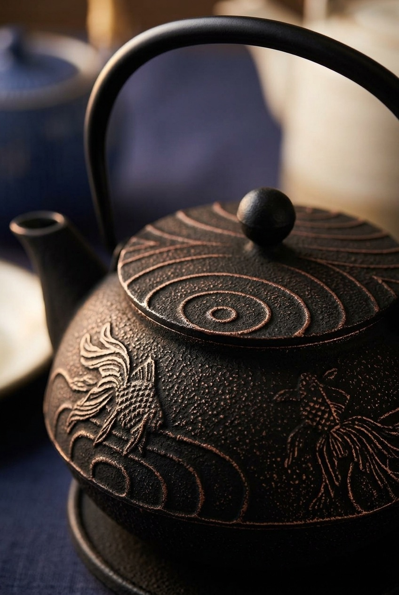

Look at the lid first: rings radiating outward from the knob, exactly like the surface of a pond after something breaks it. Now look just below, on the belly of the pot: two goldfish, mid-swim, trailing long fins through the same curved lines. It's not two unrelated patterns — it's one scene, split across the two planes of the teapot.
Traditional Japanese design rarely decorates a surface just to fill it. Here, the lid and the body are doing two different jobs in the same story: the lid reads as the surface of the water, its rings spaced the way real ripples space themselves as they spread. The body reads as what's happening underneath — goldfish moving through the same current lines that echo the ripples above them. Tilt the pot slightly and both halves of the scene sit in view at once, which is the whole point of the design: you're meant to read it as one image, not two separate motifs.
Concentric copper rings around the knob — the surface of the pond.
Two goldfish with flowing fins, swimming through matching current lines — what's under the surface.
Goldfish (kingyo) arrived in Japan from China, and for the early Edo period they stayed a luxury kept by wealthy merchants, feudal lords, and aristocrats — a cheaper, farmable stand-in for the ornamental carp only the powerful could afford to keep in real ponds. That changed by the mid-Edo period, when goldfish breeding spread and prices fell. A 1748 breeding manual, Kingyo Sodategusa, helped push the fish into ordinary households, and by the Bunka–Bunsei era (1804–1830) goldfish peddlers were a common sight on the streets of Edo. Goldfish-scooping — kingyo-sukui, the paper-net game still played at summer festivals today — traces back to around 1810, born directly out of that same street-vendor culture.
Much of Japan's goldfish still comes from one place: Yamatokoriyama, in Nara Prefecture. The story starts in 1724, when the retainer Yokota Bunzaemon brought goldfish with him as the domain's lord, Yanagisawa Yoshisato, relocated there from Kai Province. Bunzaemon's fish thrived in the region's irrigation reservoirs, whose natural microorganisms turned out to be ideal food for goldfish fry. Other samurai households picked it up as a side income, and after the Meiji Restoration it became a livelihood for former samurai and farmers alike. Three hundred years later, Yamatokoriyama still produces tens of millions of goldfish a year and holds Japan's national goldfish-scooping championship.
To be upfront: this isn't a hand-forged, one-of-a-kind artisan piece. It's from Iwachu, a Japanese ironware manufacturer with a company history of over 100 years, and this goldfish design is one pattern in their standard cast-iron tetsubin line — sand-cast, then finished with the copper reliefwork by hand, made in Japan. What you get isn't a museum object; it's a genuinely made-in-Japan piece from an established maker, carrying a real design story, at a price built for actual daily use rather than display-only collecting.
Iwachu cast-iron tetsubin, goldfish design, 22 fluid ounce capacity, coated interior, removable stainless steel mesh infuser. Made in Japan.
See current price on Amazon →As an Amazon Associate, I earn from qualifying purchases.
This page contains an affiliate link — if you buy through it, it costs you nothing extra and helps support this site. Goldfish and Yamatokoriyama history summarized from the National Diet Library's Kingyo image-bank exhibition and Yamatokoriyama City's official history page.